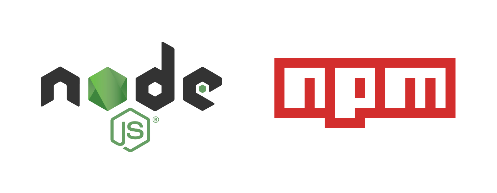

NPM 使用紹介
NPM（Node Package Manager）は JavaScript のパッケージ管理ツールであり、Node.js のデフォルトのパッケージマネージャーでもあります。
NPM を使用すると、開発者はプロジェクトの依存ライブラリやツールを簡単にダウンロード、インストール、共有、管理できます。
NPM は Node.js に付属のパッケージ管理ツールであるため、通常は Node.js をインストールするだけで、NPM もシステムに自動的にインストールされます。

主な機能：
パッケージ管理：NPM は、プロジェクトに必要なさまざまなサードパーティ製ライブラリ（パッケージ）をインストールおよび管理するのに役立ちます。たとえば、簡単なコマンドで依存関係をインストール、更新、削除できます。
バージョン管理：NPM はバージョン管理をサポートしており、特定のバージョンの依存関係に固定したり、必要に応じて最新バージョンを選択したりできます。
パッケージの公開：NPM を使用すると、開発者は自分のライブラリを NPM リポジトリに公開でき、他の開発者は NPM からこれらのライブラリをダウンロードして使用できます。
コマンドラインツール：NPM は強力なコマンドラインツールを提供しており、パッケージのインストール、スクリプトの実行、プロジェクトの初期化など、さまざまな操作に使用できます。
新しいバージョンの Node.js には NPM が統合されているため、次のように入力するだけで、npm -vインストールが成功したかどうかをテストできます。バージョンが表示されればインストール成功です：
$ npm -v 2.3.0
古いバージョンの npm をインストールしている場合は、npm コマンドで簡単にアップグレードできます。コマンドは次のとおりです：
$ sudo npm install npm -g /usr/local/bin/npm -> /usr/local/lib/node_modules/npm/bin/npm-cli.js npm@2.14.2 /usr/local/lib/node_modules/npm
Windows システムの場合は、次のコマンドを使用します：
npm install npm -g
npm コマンドを使用したモジュールのインストール
npm で Node.js モジュールをインストールする構文は次のとおりです：
$ npm install <Module Name>
次の例では、npm コマンドを使用して一般的な Node.js Web フレームワークモジュールをインストールします。express:
$ npm install express
インストール後、express パッケージはプロジェクトディレクトリの node_modules ディレクトリに配置されます。そのため、コード内では以下のようにするだけでよく、require('express')の方法で十分であり、サードパーティのパッケージのパスを指定する必要はありません。
var express = require('express');
グローバルインストールとローカルインストール
npm のパッケージインストールは、ローカルインストール（local）とグローバルインストール（global）に分かれます。コマンドラインから見ると、違いはパラメーターがあるかどうかだけです。-gパラメーター。
ローカルインストール：パッケージを node_modules ディレクトリにインストールし、情報を package.json の dependencies に保存します。
npm install express # 本地安装
グローバルインストール：コマンドラインツールや、複数のプロジェクトで使用する必要があるパッケージをインストールするために使用します。
npm install express -g # 全局安装
次のエラーが発生した場合：
npm err! Error: connect ECONNREFUSED 127.0.0.1:8087
解決方法は次のとおりです：
$ npm config set proxy null
ローカルインストール
-
スコープ：デフォルトでは、npm はパッケージを現在のプロジェクトの
node_modulesフォルダーにインストールします。つまり、そのパッケージを使用する各プロジェクトには、独自のパッケージのコピーがあります。 -
用途：ローカルインストールは通常、プロジェクトの依存関係に使用されます。各プロジェクトは独自の依存関係バージョンを持つことができるため、プロジェクトの安定性と再現性の確保に役立ちます。
-
インストールコマンド：プロジェクトディレクトリで
npm install <package-name>を実行すると、パッケージがnode_modulesフォルダーにインストールされ、package.jsonファイルに依存関係が追加されます。 -
バージョン管理：package.json ファイルを通じて
package.json和package-lock.json依存関係のバージョンを管理し、プロジェクトがさまざまな環境で一貫性を持つようにします。
グローバルインストール
-
スコープ：グローバルインストールでは、パッケージがシステムレベルのディレクトリにインストールされます。通常は
/usr/local/bin（Unixライクなシステム上）または%AppData%\npm（Windows上）です。 -
用途：グローバルインストールは、各プロジェクトで繰り返しインストールする必要のないツールやコマンドラインユーティリティに使用します。たとえば、グローバルな
create-react-appをインストールすると、新しい React プロジェクトを作成できます。 -
インストールコマンド：-
-gフラグを使用してパッケージをグローバルインストールします。例：npm install -g <package-name>。 -
バージョン管理：グローバルインストールされたパッケージのバージョンは npm が管理しますが、プロジェクトの
package.jsonには反映されません。つまり、グローバルインストールされたパッケージは異なるプロジェクト間で共有される可能性がありますが、バージョンの競合によって問題が発生する可能性もあります。
| 特性 | ローカルインストール | グローバルインストール |
|---|---|---|
| インストール範囲 | 現在のプロジェクトでのみ使用可能 | システムのグローバル環境で使用可能 |
| コマンドの使用 | npm install package-name | npm install -g package-name |
| インストール場所 | node_modulesディレクトリ | システムグローバルディレクトリ（OSによって異なります） |
| 使用シナリオ | プロジェクトの依存関係（ライブラリ、フレームワーク） | CLIツール、プロジェクトジェネレーター |
| アクセス方法 | ～を通じてrequire() 或 import使用する | コマンドラインで直接使用する |
| 依存関係の宣言 | 在 package.jsonに記録 | 記録されないpackage.jsonに記録 |
| バージョン管理 | プロジェクトごとに異なるバージョンを使用可能 | システムには1つのバージョンのみ保持 |
| 権限の問題 | 特別な権限は不要 | 管理者権限が必要な場合があります |
両方の機能を利用したい場合は、2つの場所にインストールするか、npm link。
次に、グローバル方式で express をインストールします
$ npm install express -g
インストールプロセスでは次のような出力が表示され、最初の行にモジュールのバージョン番号とインストール場所が出力されます。
express@4.13.3 node_modules/express ├── escape-html@1.0.2 ├── range-parser@1.0.2 ├── merge-descriptors@1.0.0 ├── array-flatten@1.1.1 ├── cookie@0.1.3 ├── utils-merge@1.0.0 ├── parseurl@1.3.0 ├── cookie-signature@1.0.6 ├── methods@1.1.1 ├── fresh@0.3.0 ├── vary@1.0.1 ├── path-to-regexp@0.1.7 ├── content-type@1.0.1 ├── etag@1.7.0 ├── serve-static@1.10.0 ├── content-disposition@0.5.0 ├── depd@1.0.1 ├── qs@4.0.0 ├── finalhandler@0.4.0 (unpipe@1.0.0) ├── on-finished@2.3.0 (ee-first@1.1.1) ├── proxy-addr@1.0.8 (forwarded@0.1.0, ipaddr.js@1.0.1) ├── debug@2.2.0 (ms@0.7.1) ├── type-is@1.6.8 (media-typer@0.3.0, mime-types@2.1.6) ├── accepts@1.2.12 (negotiator@0.5.3, mime-types@2.1.6) └── send@0.13.0 (destroy@1.0.3, statuses@1.2.1, ms@0.7.1, mime@1.3.4, http-errors@1.3.1)
インストール情報の確認
次のコマンドを使用すると、グローバルインストールされたすべてのモジュールを確認できます：
$ npm list -g ├─┬ cnpm@4.3.2 │ ├── auto-correct@1.0.0 │ ├── bagpipe@0.3.5 │ ├── colors@1.1.2 │ ├─┬ commander@2.9.0 │ │ └── graceful-readlink@1.0.1 │ ├─┬ cross-spawn@0.2.9 │ │ └── lru-cache@2.7.3 ……
特定のモジュールのバージョン番号を確認するには、次のコマンドを使用できます：
$ npm list grunt projectName@projectVersion /path/to/project/folder └── grunt@0.4.1
モジュールのアンインストール
次のコマンドで Node.js モジュールをアンインストールできます。
$ npm uninstall express
アンインストール後、/node_modules/ ディレクトリでパッケージがまだ存在するか確認するか、次のコマンドで確認できます：
$ npm ls
モジュールの更新
次のコマンドでモジュールを更新できます：
$ npm update express
モジュールの検索
次のコマンドを使用してモジュールを検索します：
$ npm search express
モジュールの作成
モジュールを作成するには、package.json ファイルが不可欠です。NPM を使用して package.json ファイルを生成でき、生成されたファイルには基本的な結果が含まれます。
$ npm init
This utility will walk you through creating a package.json file.
It only covers the most common items, and tries to guess sensible defaults.
See `npm help json` for definitive documentation on these fields
and exactly what they do.
Use `npm install <pkg> --save` afterwards to install a package and
save it as a dependency in the package.json file.
Press ^C at any time to quit.
name: (node_modules) runoob # 模块名
version: (1.0.0)
description: Node.js 测试模块(www.runoob.com) # 描述
entry point: (index.js)
test command: make test
git repository: https://github.com/runoob/runoob.git # Github 地址
keywords:
author:
license: (ISC)
About to write to ……/node_modules/package.json: # 生成地址
{
"name": "runoob",
"version": "1.0.0",
"description": "Node.js 测试模块(www.runoob.com)",
……
}
Is this ok? (yes) yes
上記の情報は、自分の状況に応じて入力する必要があります。最後に "yes" と入力すると、package.json ファイルが生成されます。
次に、以下のコマンドを使用して npm リポジトリにユーザーを登録できます（メールアドレスで登録）：
$ npm adduser Username: mcmohd Password: Email: (this IS public) mcmohd@gmail.com
次に、以下のコマンドを使用してモジュールを公開します：
$ npm publish
上記の手順がすべて正しければ、他のモジュールと同様に npm を使用してインストールできます。
バージョン番号
NPM でコードをダウンロードおよび公開する際には、常にバージョン番号に関わります。NPM はセマンティックバージョン番号を使用してコードを管理しています。ここでは簡単に紹介します。
バージョン番号はセマンティックバージョニング（SemVer）に従い、形式は MAJOR.MINOR.PATCH で、追加ラベルを付けることができます。
- MAJOR（メジャーバージョン）：互換性のない API の変更を行った場合に増加します。例：
2.0.0。 - MINOR（マイナーバージョン）：後方互換性を保ちながら新機能を追加した場合に増加します。例：
1.1.0。 - PATCH（パッチバージョン）：バグを修正し、新機能を追加しない場合に増加します。例：
1.0.1。
追加ラベル
- プレリリースバージョン：例：
1.0.0-alpha或1.0.0-beta.1、そのバージョンがまだテスト中であることを示します。 - ビルドメタデータ：例：
1.0.0+build.1、ビルドに関する情報を提供します。
インストール例
- 特定のバージョンをインストール：
npm install package-name@1.2.3 - 最新のメジャーバージョンをインストール：
npm install package-name@^1.2.3（インストール1.x.xの最新バージョン）
NPM よく使用するコマンド
NPMは多くのコマンドを提供しており、使用できますnpm helpすべてのコマンドを確認できます。
| コマンド | 説明 |
|---|---|
npm init | 新しい...を初期化しますpackage.jsonファイルを対話的に情報を入力して初期化します。 |
npm init -y | デフォルト設定で...をすばやく作成しますpackage.jsonファイル。 |
npm install package-name | 指定したパッケージをローカルにインストールします。 |
npm install -g package-name | 指定したパッケージをグローバルにインストールし、システム全体で使用できるようにします。 |
npm install | インストールpackage.jsonにリストされているすべての依存関係をインストールします。 |
npm install package-name --save-dev | パッケージをインストールして...に追加しますdevDependencies。 |
npm update package-name | 指定した依存パッケージを更新します。 |
npm uninstall package-name | 指定した依存パッケージをアンインストールします。 |
npm uninstall -g package-name | 指定したパッケージをグローバルにアンインストールします。 |
npm list | 現在のプロジェクトのインストール済み依存パッケージの一覧を表示します。 |
npm list -g --depth=0 | グローバルにインストールされた依存パッケージの一覧を表示します（依存ツリーは展開しません）。 |
npm info package-name | バージョンや依存関係などのパッケージの詳細情報を表示します。 |
npm login | NPMアカウントにログインします。 |
npm publish | 現在のパッケージをNPMレジストリに公開します。 |
npm unpublish package-name | NPMレジストリから公開したパッケージを取り下げます（通常24時間以内）。 |
npm cache clean --force | NPMキャッシュをクリアします。 |
npm audit | プロジェクトの依存関係にあるセキュリティ脆弱性をチェックします。 |
npm audit fix | 既知の脆弱性を自動的に修正します。 |
npm run script-name | 実行package.jsonで定義されたスクリプト、例えばnpm run start。 |
npm start | 実行startスクリプト（...と同等）npm run start）。 |
npm test | 実行testスクリプト。 |
npm build | 実行buildスクリプト。 |
npm outdated | プロジェクト内で更新可能なバージョンの依存パッケージを一覧表示します。 |
npm version patch/minor/major | 更新package.json内のバージョン番号を更新し、自動的にバージョンを更新します。 |
npm ci | 使用package-lock.json依存関係をすばやくインストールし、CI/CD環境に適しています。 |
この章で紹介した部分以外にも、NPMには多くの機能があり、package.jsonにもその他の便利なフィールドが多数あります。
できるだけでなくhttps://docs.npmjs.com/公式ドキュメントを参照することに加えて、ここではNPMの一般的なコマンドをいくつか紹介します。
淘宝 NPM ミラーの使用
国内からnpmの公式ミラーを直接使用すると非常に遅いため、この問題を解決するには、淘宝が提供するミラー（cnpmまたはNPMの設定）を使用して、パッケージのダウンロードとインストールを高速化できます。
淘宝NPMミラーは完全なnpmjs.orgミラーであり、公式バージョンの代わりに使用できます（読み取り専用）。同期頻度は現在10分に1回で、公式サービスとの同期をできる限り保証しています。
淘宝がカスタマイズしたcnpm（gzip圧縮サポート）コマンドラインツールをデフォルトのnpmの代わりに使用できます：
$ npm install -g cnpm --registry=https://registry.npmmirror.com
次に、cnpmを使用してnpmの代わりにパッケージのインストールと管理を行うことができます：
$ cnpm install [name]
package.json の説明と使い方
package.jsonはNode.jsプロジェクトの中核となるファイルであり、プロジェクトのメタデータ、依存関係、スクリプトなどの情報が含まれています。
package.jsonファイルはプロジェクトのメタデータと依存関係を記述するために使用され、通常はプロジェクトのルートディレクトリにあり、プロジェクトの設定ファイルです。
package.jsonファイルはJSON形式のファイルであり、以下の基本フィールドが含まれます：
name：プロジェクトの名前。一意である必要があり、通常は小文字とハイフンを使用します。version：プロジェクトのバージョン番号。セマンティックバージョニング（Semantic Versioning）に従います。description：プロジェクトの簡単な説明。main：プロジェクトのエントリーファイル。通常はアプリケーションの起動ファイルです。scripts：一連のコマンドラインスクリプトを定義し、プロジェクト内で特定のタスクを実行できます。dependencies：プロジェクトの実行に必要なすべての依存パッケージとそのバージョンを一覧表示します。devDependencies：開発プロセス中にのみ必要な依存パッケージとそのバージョンを一覧表示します。peerDependencies：プロジェクトがその依存パッケージにも依存することを期待するパッケージを一覧表示します。optionalDependencies：オプションの依存パッケージを一覧表示します。engines：プロジェクトと互換性のあるNode.jsバージョンを指定します。repository：プロジェクトのコードリポジトリ情報。例：GitHubリポジトリのURL。keywords：プロジェクトのキーワード。npm検索でプロジェクトを見つけるのに役立ちます。author：プロジェクトの作者情報。license：プロジェクトのライセンス情報。
使用方法：
-
プロジェクトの初期化：プロジェクトディレクトリで実行する
npm initコマンドを実行すると、npmが...を作成するようガイドしますpackage.jsonファイル、またはデフォルト値が含まれた...を自動生成しますpackage.json。 -
依存関係のインストール：使用
npm install <package-name>コマンドで依存関係をインストールすると、npmは自動的に依存関係を...に追加しますpackage.jsonファイルのdependencies或devDependencies中に追加し、...を作成しますpackage-lock.jsonファイルを作成して依存関係のバージョンをロックします。 -
スクリプトの管理：...で
scriptsフィールドにコマンドを定義します。例えば"start": "node app.js"、その後...を使用してnpm startコマンドでこれらのスクリプトを実行できます。 -
バージョン管理：使用
npm versionコマンドでプロジェクトのバージョン番号を管理します。npmは自動的に...を更新しますpackage.json内のバージョン番号を更新し、新しいGitタグを生成します。 -
パッケージの公開：プロジェクトがnpmに公開する準備ができたら、...を使用できます
npm publishコマンドを実行すると、npmは...を読み取りますpackage.json内の情報を読み取ってパッケージを公開します。 -
依存関係の管理：
package.json和package-lock.jsonファイルと連携して、プロジェクトがさまざまな環境で依存関係のバージョンを一致させることを保証します。
典型的なpackage.jsonファイルの構造は次のとおりです：
例
"name": "my-project",
"version": "1.0.0",
"description": "A simple Node.js project",
"main": "app.js",
"scripts": {
"start": "node app.js",
"test": "echo \"Error: no test specified\" && exit 1"
},
"dependencies": {
"express": "^4.17.1"
},
"devDependencies": {
"nodemon": "^2.0.20"
},
"keywords": ["node", "npm", "example"],
"author": "Your Name",
"license": "MIT"
}
フィールドの説明：
| フィールド | 説明 |
|---|---|
| name | プロジェクトの名前。通常は小文字とハイフンです。 |
| version | プロジェクトのバージョン番号。...に従います语义化バージョン仕様 (SemVer)。 |
| description | プロジェクトの簡単な説明。 |
| main | プロジェクトのエントリーファイル。デフォルトは...ですindex.js。 |
| scripts | プロジェクトで実行可能なスクリプトコマンドを定義します。例：npm start。 |
| dependencies | プロジェクトの実行時に必要な依存ライブラリ。インストール時に...に追加されますnode_modules。 |
| devDependencies | 開発時に使用する依存ライブラリ。本番環境ではインストールされません。 |
| keywords | キーワードの配列。プロジェクトの説明やNPM検索でプロジェクトを見つけるのに役立ちます。 |
| author | プロジェクトの作者情報。 |
| license | プロジェクトのライセンスの種類。例：MIT、ISC。 |
package.json を使用する利点
- 依存関係の管理：プロジェクトの依存関係とそのバージョンを一元管理します。
- タスクの自動化：...を通じて
scriptsフィールドを使用すると、一般的なタスクを簡単に実行できます。 - バージョン管理：プロジェクトとその依存関係のバージョンの一貫性を確保し、チームコラボレーションを容易にします。
- プロジェクトの説明：プロジェクトにメタデータ情報を提供し、公開と共有を容易にします。
依存関係の管理
dependencies：プロジェクトの実行に必要な依存関係を保存します。
"dependencies": {
"express": "^4.17.1"
}
依存関係のインストール時に使用：
npm install express
devDependencies：プロジェクトの開発期間中に必要な依存関係を保存します。
"devDependencies": {
"nodemon": "^2.0.20"
}依存関係のインストール時に使用：
npm install nodemon --save-dev
scripts フィールド
scriptsフィールドは、npm run <script> で実行できるコマンドを定義するために使用されます。一般的なスクリプトは次のとおりです：
"scripts": {
"start": "node app.js",
"test": "jest",
"build": "webpack --mode production",
"dev": "nodemon app.js"
}スクリプト実行の例：
npm run dev # 执行 "nodemon app.js" npm start # 等同于 "node app.js"，可以直接用 npm start 运行
バージョン番号の記号の説明
^（キャレット）：現在のメジャーバージョンと互換性のある最新バージョンをインストールすることを示します。例えば、^4.17.1は...をインストールします4.x.x内の最新バージョン。~（チルダ）：現在のマイナーバージョンと互換性のある最新バージョンをインストールすることを示します。例えば、~4.17.1は...をインストールします4.17.x内の最新バージョン。
よく使うコマンド
package.jsonファイルを初期化する：
npm init
npm init -y を使用すると、デフォルトのpackage.jsonファイルをすばやく生成できます。
プロジェクトの依存関係を確認する：
npm list --depth=0
依存関係を更新する：
npm update package-name
注意事項
- 維持する
package.jsonファイルの簡潔さと正確さを維持し、不要なフィールドを避けてください。 - 使用
package-lock.jsonを使用して依存関係のバージョンをロックし、プロジェクトがさまざまな環境で一貫性を保つようにします。 - 依存関係を定期的に更新して、最新の機能とセキュリティ修正を利用します。
詳細については、次を参照してください：https://npmmirror.com/。
その他の拡張
阿东
fen***odng666@gmail.com
参考URL
npm で node_modules をインストールする際に常にエラーが表示される場合：エラー： npm resource busy or locked.....。
以前にインストールした node_modules を削除してみてください：
阿东
fen***odng666@gmail.com
参考URL